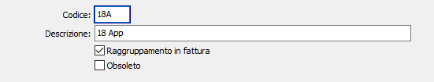

Tipologie riferimenti documenti
Consente di inserire i riferimenti da utilizzare eventualmente sui documenti del ciclo attivo quali Offerte clienti, Ordini clienti, Ddt vendita, Fatture vendita, Vendita al dettaglio, Parcelle proforma e definitive se è attiva in configurazione "Standard - ciclo attivo" la voce "Gestione riferimenti su documenti".
La casella "Raggruppamento in fattura", viene utilizzata in fase di generazione fatture; se spuntata, consente di specificare, in caso di raggruppamento per prodotto, se raggruppare le righe anche per tipo riferimento e riferimento, se presente; altrimenti se vuota, sarà effettuato il normale raggruppamento per prodotto.
